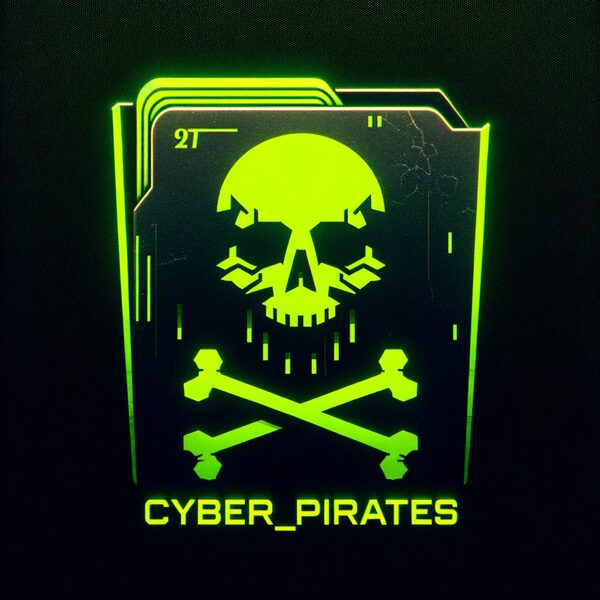

Carve et slettet logo tilbage — og pas på flag-formatet.
Et EWF-image af en USB-stick. En Autopsy-tutorial-PDF hinter: "perhaps finding something in the deleted files." Der er netop én slettet fil.
fls -r -i ewf -f ntfs payload.E01 # * logo.bmp (inode 43)
icat -i ewf -f ntfs payload.E01 43 > logo.bmp # åbn -> pirat-logo med teksten CYBER_PIRATESFlaget er firmanavnet fra det slettede logo. En Reminder.txt bekræfter: "Some idiot used
our old name as the password."
Format-fælde: kun DDC{cyber_pirates} virkede — HKN{...},
uppercase og andre varianter blev alle afvist.
Flag: DDC{cyber_pirates}

logo.bmp: firmanavnet CYBER_PIRATES ER flaget (afleveres lowercase som DDC{cyber_pirates}).-i ewf -f ntfs til fls/icat på et E01-NTFS-image.